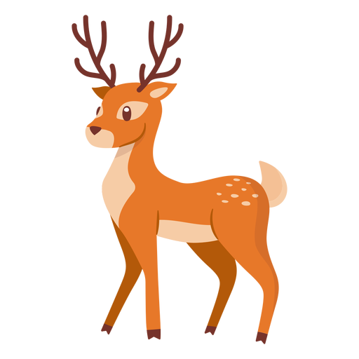
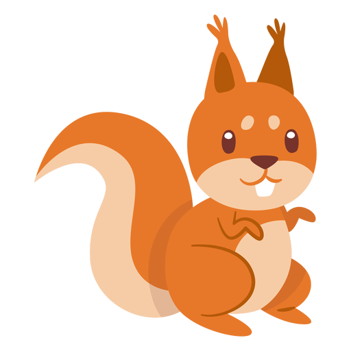
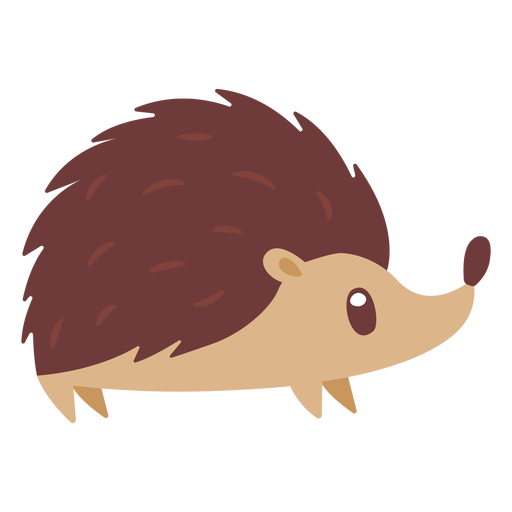

<ion-content>

  <ion-button class="fondo" (click)="toAudio('mapache')" [ngClass]="{ 'button-horizontal': this.platform.isLandscape(), 'button-vertical': !this.platform.isLandscape() }">
    
  </ion-button>

  <ion-button class="fondo" (click)="toAudio('ciervo')" [ngClass]="{ 'button-horizontal': this.platform.isLandscape(), 'button-vertical': !this.platform.isLandscape() }">
    
  </ion-button>

  <ion-button class="fondo" (click)="toAudio('ardilla')" [ngClass]="{ 'button-horizontal': this.platform.isLandscape(), 'button-vertical': !this.platform.isLandscape() }">
    
  </ion-button>

  <ion-button class="fondo" (click)="toAudio('zorro')" [ngClass]="{ 'button-horizontal-cuarto': this.platform.isLandscape(), 'button-vertical': !this.platform.isLandscape() }">
    
  </ion-button>

  <ion-button class="fondo" (click)="toAudio('erizo')" [ngClass]="{ 'button-horizontal-quinto': this.platform.isLandscape(), 'button-vertical-quinto': !this.platform.isLandscape() }">
    
  </ion-button>

  <ion-fab vertical="bottom" horizontal="start" slot="fixed">
    <ion-fab-button class="fondo">
      <ion-img [(src)]="this.srcIdioma"></ion-img>
    </ion-fab-button>
    <ion-fab-list side="top">
      <ion-fab-button class="fondo" (click)="toSpanish()"><ion-img src="../../../assets/images/icon-esp.png"></ion-img></ion-fab-button>
      <ion-fab-button class="fondo" (click)="toEnglish()"><ion-img src="../../../assets/images/icon-eng.png"></ion-img></ion-fab-button>
      <ion-fab-button class="fondo" (click)="toGerman()"><ion-img src="../../../assets/images/icon-ger.png"></ion-img></ion-fab-button>
      <ion-fab-button class="fondo" (click)="toPortuguese()"><ion-img src="../../../assets/images/icon-por.png"></ion-img></ion-fab-button>
    </ion-fab-list>
  </ion-fab>

  <ion-fab vertical="bottom" horizontal="end" slot="fixed">
    <ion-fab-button class="fondo">
      <ion-img [(src)]="this.srcCategoria"></ion-img>
    </ion-fab-button>
    <ion-fab-list side="top">
      <ion-fab-button class="fondo" (click)="toAnimales()"><ion-img src="../../../assets/images/mapache.png"></ion-img></ion-fab-button>
      <ion-fab-button class="fondo" (click)="toColores()"><ion-img src="../../../assets/images/colores.png"></ion-img></ion-fab-button>
      <ion-fab-button class="fondo" (click)="toNumeros()"><ion-img src="../../../assets/images/numeros.png"></ion-img></ion-fab-button>
    </ion-fab-list>
  </ion-fab>

</ion-content>